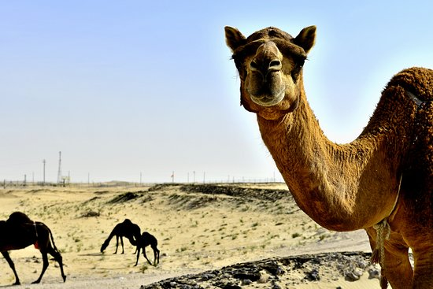
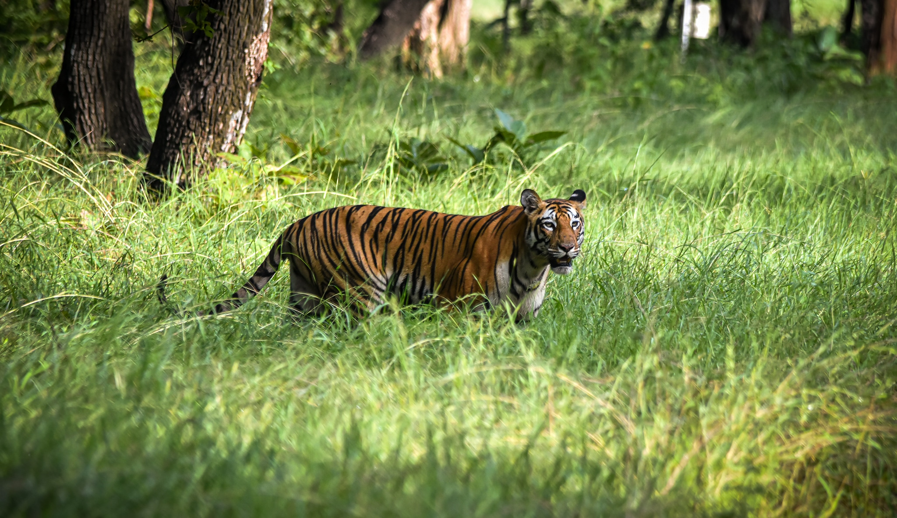
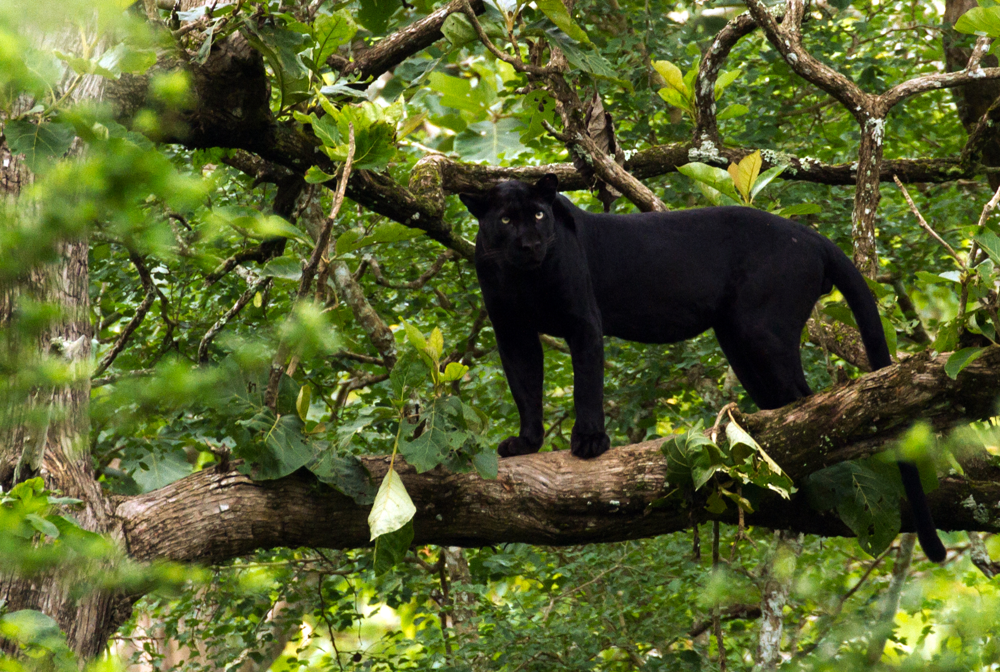

Desert/Sand Dunes |

4 Camels in the scarce Desert, near an inhabited area
|
Camels in a Desert, which is one of Earth's harshest Environments
|
Wind Noises, which is the Ambiance of the Desert |
Savannah/Grassland |
 Skinny Cheetah roaming the Savannahs
Skinny Cheetah roaming the Savannahs |
Elephant getting wet because the Savannah is extremely harsh.
|
Lion Noises, which are present in the Savannahs |
Forest |
 An Image of a Tiger which is an Apex Predator of the Forest's near India. |
Deer in a forest so they can get shade.
|
Birds and Nature Ambiance that would be present in a Forest |
Rainforest |
 An Image of a Panther lurking in a tree to hunt, since its an Apex Predator. |
Monkeys are found in the largest Biodiverse habitat on the planet, the Rainforest. This is shown Here.
|
Ambiance of the environment and weather that is present in the Rainforest. |
Tundra/Poles/Glacier |
 Penguins diving near Glaciers, which are abundant in the colder environments. Penguins diving near Glaciers, which are abundant in the colder environments. |
Polar-Bears playing in the Water. Sadly this is what the Colder Environments are turning into as the ice melts. This is due too Global Warming.
|
Wind and Ambiance of the Winter Environment that is present in the Tundras/Poles/Glaciers. |
{kind=link}